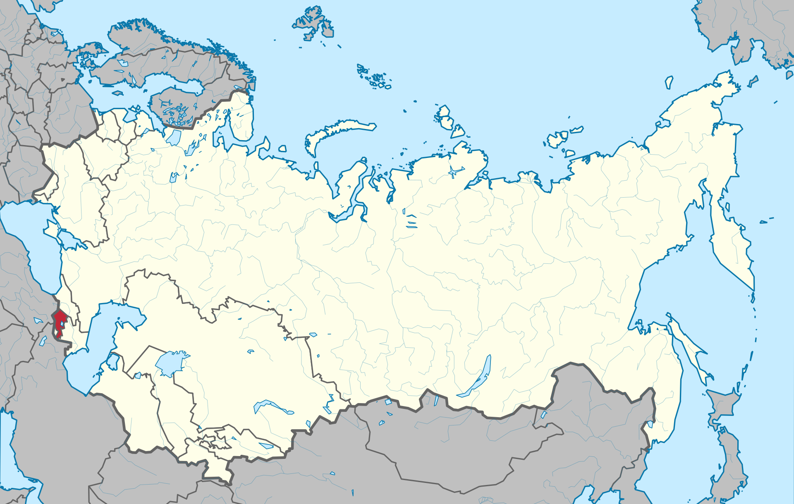

ASSR
In 1922-1936. the official name of the republic sounded in Russian as "Socialist Soviet Republic of Armenia", "Socialist Soviet Republic of Armenia", since 1936, according to the Constitution of the USSR, "Armenian Soviet Socialist Republic", and in Armenian "Hayastani Socialistakan Khorardayin Hanrapetutyun" (Armenian Հայաստակի Սոցիալիստան Խորհրդային Հանրապետություն). Then the name was changed to "Armenian SSR", respectively, in the Armenian name the form "ayastani" ("Armenia") was replaced by the adjective "aikakan" ("Armenian"), in addition, the words "Soviet" and "socialist" were swapped ( Armenian Հայկական Խորհրդային Սոցիալիստական Հանրապետություն). The official name of the Armenian SSR in Russian did not change further, but the Armenian name changed twice more, together with the officially changed Armenian translation of the terms "Soviet" and "republic". In 1940, instead of the Armenian cripples, direct borrowings were taken as a translation of both terms, and the name was changed to "Haykakan Sovetakan Socialistakan Republic" (Armenian Հայկական Սովետական Սոցիալիստական Ռեսպուբլիկա). In 1966, the previous term for “republic” was restored (for “Soviet”, Russism remained), and in the final version the name of the republic looked like “Haykakan Sovetsakan Socialistakan Hanrapetutiun” (Armenian Հայկական Սովետական Սոցիալիստական Սոցիալիստական Հաունրպետությ 
Map of the ASSR from November 29, 1920 - August 23, 1990
[BACK TO HOME] [BACK TO REPUBLICS]